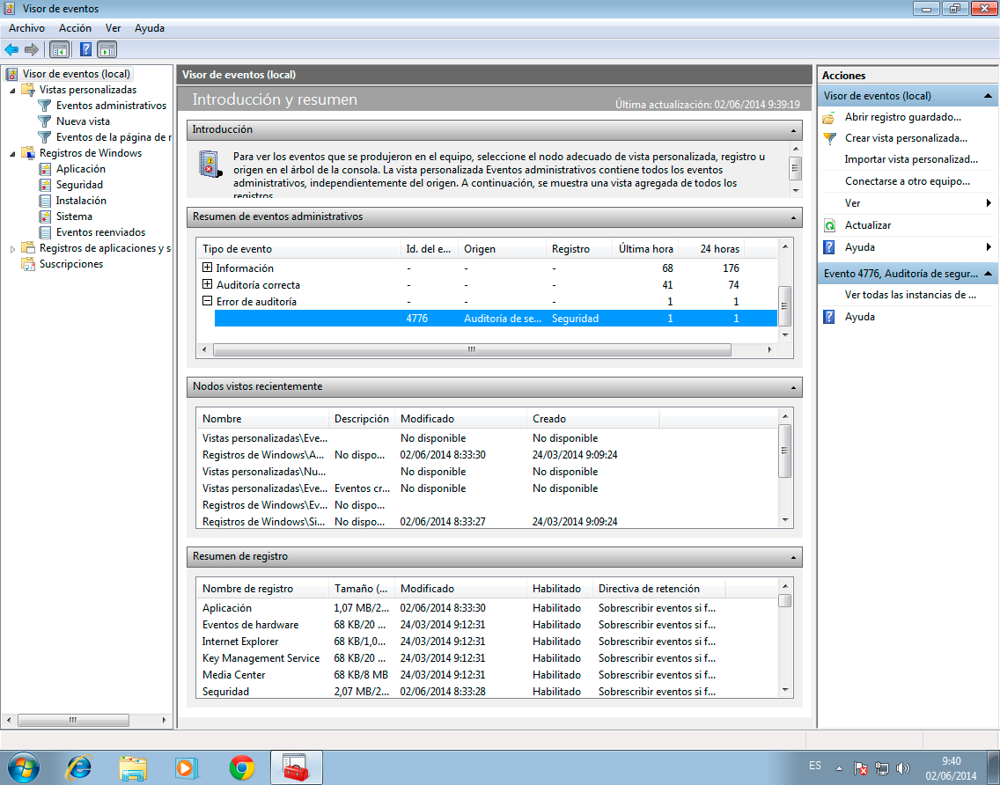
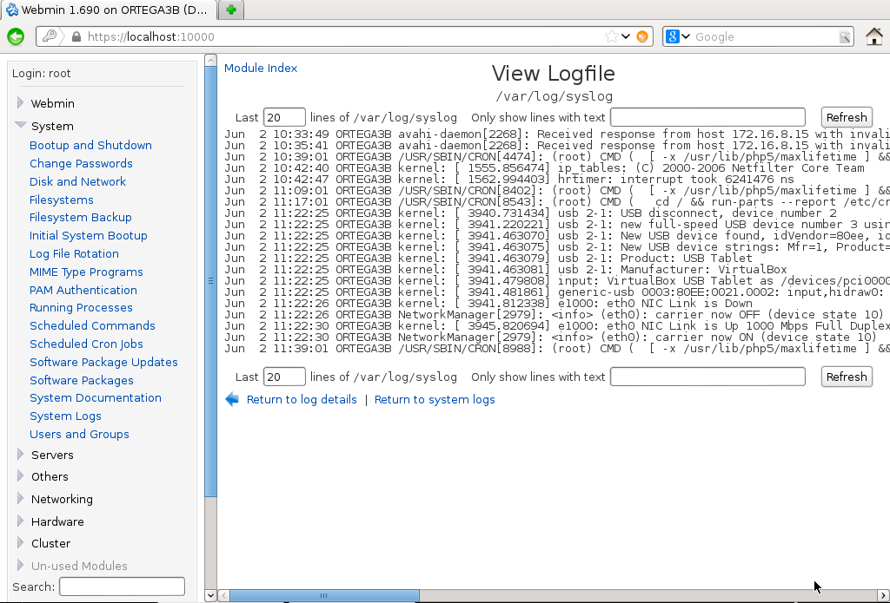

- Módulo: Sistemas Operativos
- Título del trabajo: A1: Registro de eventos local
- Componentes del grupo: Alejandro Ortega Freire
- Curso Académico: 2013/2014
- Fecha de entrega: 11 de junio de 2014
1.- Introducción
- Toda la actividad importante del sistema debe quedar registrada en los ficheros de registro. Esto nos permite tener un histórico del comportamiento del sistema, que nos ayuda a modo de "caja negra" a reconstruir situaciones del pasado para diversos fines. Esta es la utilidad de la monitorización y la auditoría.
2.- Registro en Windows
Realizar las siguientes tareas en SO Windows:
- Debemos activar unas directivas de seguridad, para auditar los inicios de sesión al sistema (correctos e incorrectos).
- Para activar las directivas de seguridad hay que dirigirse a Panel de control -> Sistema y seguridad -> Herramientas asministrativas -> Directiva de seguridad local. Incluir captura de pantalla con la directiva activada.
Imagen 1: Directivas de seguridad local.
Imagen 2: Activar auditorias de los inicios de sesión.
Imagen 3: Activar auditorias de los inicios de sesión.
- Poner como nombre NETBIOS de la máquina:
- "1er-apellido-del-alumno"+2 => Windows 7
- "1er-apellido-del-alumno"+1 => Winodws 2008 Server
Imagen 4: Establecer el nombre del equipo como ORTEGA2A.
- Reiniciar.
- Crear los usuarios alu1, alu2 y alu3.

Imagen 5: Crear los usuarios.
Imagen 6: Usuarios creados.
- Hacer las siguientes acciones:
- Acceder al visor de eventos. Panel de control -> Sistema y seguridad -> Herramientas asministrativas -> Visor de eventos. Comprobar cómo se registran los eventos anteriores. Incluir captura de pantalla.

Imagen 9: Visor de eventos.
- Para comprobar el registro de los accesos al sistema correctos se hace un filtrado de todos los registros (creando una vista personalizada) indicando como opciones:
- El filtro muestra cuatro registros en la última hora, correspondiente a los inicios y cierres de sesión correctos de alu1.
Imagen 11: Inicio de sesión correcto con alu1.
Imagen 12: Cierre de sesión correcto con alu1.
- Para comprobar que se registró el intento de incio de sesión del usuario alu2 poniendo mal la clave, hay que situarse en el visor de eventos en la sección de Auditorías Erróneas.
Imagen 13: Error de auditoría.
- Exportar los eventos a ficheros CSV. Incluir fichero en la entrega con el nombre "registro-windows.csv".
- Se crean dos ficheros: resgistro-windows-login_correctos.csv que contiene los registros de los incios de sesión correctos; y resgistro-windows-login_incorrectos.csv que contiene el intento erróneo de inicio de sesión de alu2.
 Principio del punto 2 |
Principio del punto 2 |  Fin del punto 3 |
Fin del punto 3 |  Índice
Índice
3.- Registro en GNU/Linux (Teoría)
3.1- Monitorización
Configurar y recurrir a archivos de log.
- Enlaces de interés: logs en linux.
- Los archivos de log se guardan normalmente en /var/log, aunque cada programa puede usar uno propio.
- El servicio de log lo controla rsyslog o syslog en versiones antiguas.
- El fichero de configuración principal es /etc/rsyslog.conf, pero hay ficheros de configuración secundarios en /etc/rsyslog.d. Por ejemplo el fichero /etc/rsyslog.d/50-default.conf.
- Campos: selector (facility+priority) y acción. También llamado "recurso.prioridad acción".
- Facility identifica al origen del mensaje: auth, authpriv, cron, daemon, ftp, kern, lpr, mail, news, syslog, user, uucp, y local0 hasta local7.
- Priority idenfica la urgencia del mensaje: debug, info, notice, warning, err, crit, alert y emerg.
Ejemplo de configuración dentro de rsyslog:
- kern.* /var/log/kernel: los eventos generados por el kernel, se guardarán en el fichero /var/log/kernel.
- kern.crit @192.168.1.11: los eventos críticos o de mayor prioridad, generados por el kernel se enviarán al PC con la IP especificada.
- kern.crit /dev/console: los eventos críticos o de mayor prioridad, generados por el kernel se mostrarán en el dispositivo consola.
- kern.info;kern.!err /var/log/kernel-info: los eventos generados por el kernel, de igual o mayor prioridad a info, pero NO los eventos de error o prioridad superior, se guardarán en el fichero /var/log/kernel-info.
El comando logger permite crear un mensaje de log manualmente. La opción -p permite determinar el par "facility-priority". Más información en http://www.estrellateyarde.org/so/logs-en-linux
3.2- Auditorías
Veamos la utilidad de algunos ficheros de log del sistema:
- /var/log/messages – Contains global system messages, including the messages that are logged during system startup.
- /var/log/dmesg – Contains kernel ring buffer information. When the system boots up, it prints number of messages on the screen that displays information about the hardware devices that the kernel detects during boot process. You can also view the content of this file using the dmesg command.
- /var/log/auth.log – Contains system authorization information, including user logins and authentication machinsm that were used.
- /var/log/boot.log – Contains information that are logged when the system boots
- /var/log/dpkg.log – Contains information that are logged when a package is installed or removed using dpkg command
- /var/log/lastlog – Displays the recent login information for all the users. This is not an ascii file. You should use lastlog command to view the content of this file.
- /var/log/user.log – Contains information about all user level logs
- /var/log/btmp – This file contains information about failed login attemps. Use the last command to view the btmp file. For example, “last -f /var/log/btmp | more”
- /var/log/wtmp or /var/log/utmp – Contains login records. Using wtmp you can find out who is logged into the system. who command uses this file to display the information.
- /var/log/faillog – Contains user failed login attemps. Use faillog command to display the content of this file.
Además existen otras herramientas para auditar accesos a objetos del sistema de ficheros como "incron".
Principio del punto 3 | Fin del punto 4 | Índice
4.- Registro en GNU/Linux (GUI)
- Se recomienda usar GNU/Linux Debian.
- Para cambiar el nombre de la máquina, hacemos: hostname "1er-apellido-alumno"3".
- También es posible modificar el nombre de la máquina editando el archivo /etc/hostname.
- Usar el comando hostname para comprobar el nombre de la máquina.
Imágenes 14-15: Cambiar el nombre de la máquina Debian.
Imagen 21: Iniciar el servicio Webmin.
- Para acceder al programa Webmin, abrimos un navegador web y ponemos como URL https://localhost:10000.
Imagen 22: Acceder a Webmin.
Imagen 23: Primer acceso a Webmin.
- Vamos a analizar los ficheros de log con la herramienta anterior. Para ello vamos a las opciones del menú System -> System Log. Incluir captura de pantalla.

Imágenes 24-25: Analizar ficheros de log en Webmin.
Principio del punto 4 | Fin del punto 5 | Índice
5.- Registro en GNU/Linux (Comandos)
- Vamos a realizar una monitorización local de nuestro equipo GNU/Linux, con rotación de log's.
- Se recomienda usar GNU/Linux Debian.
NOTA 2:
- El fichero de configuración principal del servicio Syslog tiene el nombre /etc/rsyslog.conf.
- En algunas distribuciones existe además el directorio /etc/rsyslog.d que contiene la configuración repartida en varios ficheros para hacerla más manejable. Pero funciona igual que el caso anterior.
- El programa/demonio del servicio Syslog tiene el nombre /sbin/rsyslogd.
5.1- Configuración de Syslog
Realizar las siguientes tareas:
- Consultar el fichero /etc/rsyslog.conf.

Imágenes 26-28: Fichero /etc/rsyslog.conf.
NOTA 3: vamos a añadir una nueva línea para configurar la grabación de nuestros eventos:
- Como recurso.prioridad usaremos local0.*.
- Como fichero de log usaremos /var/log/nombrealumno/prueba-local.log.
- Configurar la grabación de eventos. Seguir el siguiente proceso:
- Crear la carpeta "/var/log/alejandro".
- Con el usuario root, crear el fichero log de prueba "/var/log/alejandro/prueba-local.log" vacío.
- touch /var/log/alejandro/prueba-local.log
- Añadir la siguiente línea al fichero de configuracion /etc/rsyslog.conf.
- local0.* /var/log/nombredelalumno/prueba-local.log
Imágenes 29-30: Configurar la grabación de eventos.
- Ahora debemos reiniciar el servicio rsyslog, para que se recargue la nueva configuración.
- /etc/init.d/rsyslog stop
- /etc/init.d/rsyslog start
Imagen 31: Reiniciar el servicio rsyslog.
5.2- Comprobar Rsyslog
- cat /var/log/nombredelalumno/prueba-local.log. Esto nos muestra que el fichero de log está vació por el momento.
Imagen 32: Fichero prueba-local.log vacío.
- Ahora vamos a usar el comando logger para generar mensajes de log en el fichero anterior. Por ejemplo: logger -p local0.info "Hola Mundo".
- Usaremos para nuestros ejemplos el recurso "local0". Pero también se podrían usar local1, local2, local3, local4, local5, local6 y local7.
- Crear varios registros mediante el comando logger, usando varias prioridades diferentes y otros valores. Por ejemplo, probar los parámetros de logger -i, -t, etc.
Imagen 33: Generar mensajes de log con el comando logger.
- Ejecutando de nuevo cat /var/log/nombredelalumno/prueba-local.log se comprueba que el fichero de log ha dejado de estar vacío.
Imagen 34: Contenido de prueba-local.log una vez creados los mensajes.
- Consultar los mensajes registrados, e indicar sobre un ejemplo el significado de cada campo de una línea concreta del log. Incluir captura de pantalla.
- Mensaje de prueba: logger -p local0.notice -t TEST -f /etc/motd. Registra el mensaje del fichero /etc/motd como local0.notice, poniéndole una etiqueta TEST. De esta expresión se puede indicar lo siguiente:
- logger -> comando que genera el mensaje de log.
- -p local0.notice -> priority, permite añadir el mensaje con una prioridad específica. La prioridad se expresa de la forma "facility.level". En este caso "-p local0.notice" registra el mensaje como "noticia" en el recurso "local0".
- -t TEST -> tag, parámetro que añade una etiqueta al mensaje. En este caso la etiqueta es "TEST".
- -f /etc/motd -> file, añade el contenido del fichero "/etc/motd" como mensaje de log.
NOTA 4: el archivo /etc/motd incluye el mensaje del día (motd son las iniciales en inglés de message of the day) que se muestra al usuario cada vez que accede a su cuenta. La principal ventaja de este comando es que requiere menos recursos que, por ejemplo, enviar un correo a cada uno de los usuarios del sistema. En Debian 7 el motd por defecto es el que se muestra a continuación:
Imagen 35: Contenido de /etc/motd.
Imagen 36: Generar mensaje de log de prueba.
Imagen 37: Comprobar los cambios que se han producido en prueba-local.log.
Principio del punto 5 | Fin del punto 6 | Índice
6.- Configuración de Logrotate
- El programa logrotate permite hacer rotación de los ficheros de log.
- Fichero de configuración principal es /etc/logrotate.conf. Además existen ficheros de configuración auxiliares en /etc/logrotate.d.
- Ahora vamos a configurar logrotate para generar rotaciones de nuestro fichero de log. Para ello crearemos el fichero /etc/logrotate.d/alejandro con el siguiente contenido:
root@debian:~# more /etc/logrotate.d/alejandro
/var/log/alejandro/prueba-local.log /var/log/alejandro/prueba-local.*.log {
size = 1k
rotate 3
missingok
compress
notifempty
}
- De la anterior expresión se puede indicar los siguiente:
- size=1k -> tamaño máximo que puede tener el archivo de log a partir del cual se produce la rotación.
- rotate 3 -> número de rotaciones que se guardan.
- compress -> las rotaciones se comprimen.
- notifempty -> avisa si la rotación está vacía.
Imágenes 38-39: Crear el fichero /etc/logrotate.d/alejandro para configurar la rotación de log.
- Vamos a generar muchos mensajes de log en el fichero de registro de eventos. Para ello podemos tomar varios caminos:
- Podemos usar el script proporcionado por el profesor, cuya función es la de generar cientos de mensajes de log hacia el nuevo fichero de registro (esta es la opción escogida para generar los mensajes). Modo de uso:
- Podemos invocar el comando siguiente para aumentar el tamaño del registro de log con la información contenida en un fichero de texto: logger -p local0.notice -t ETC-MOTD -f /etc/motd.
- Comprobar que el fichero de log ha crecido de tamaño.

Imagen 41: Ejecución del script send-messages.sh.
- Para que se dispare la rotación de log (logrotate) automáticamente podemos reiniciar el equipo. Tras el reinicio de la máquina se observa como se ha producido la rotación como muestra la siguiente imagen:

Imagen 42: Primera rotación de prueba-local.log.
- También es posible ejecutar manualmente el programa de rotación logrotate sin tener que reiniciar el equipo, de la siguiente forma /usr/sbin/logrotate -f /etc/logrotate.conf.
- Se ejecutó de nuevo el script send-messages.sh para generar nuevos mensajes y se ejecutó manualmente logrotate creando una segunda rotación como muestra la siguiente imagen:
Imagen 43: Segunda rotación de prueba-local.log.
Principio del punto 6 | Fin del punto 7 | Índice
7.- Anexo
- El programa Sentry (http://sourceforge.net/projects/sentrytools) sirve para revisar los logs del sistema.
- La herramienta incron de GNU/Linux, permite crear/activar auditorías de cualquier objeto del sistema de ficheros.
Índice
Alejandro Ortega Freire 1ºASIR
Implantación de Sistemas Operativos